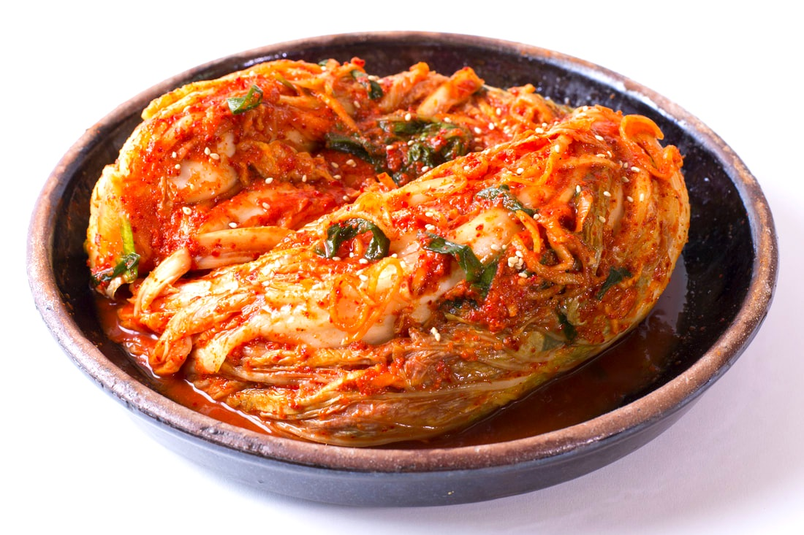

Kimchi

What is kimchi?
Kimchi (김치) is a traditional Korean food.
It is often eaten as a side dish (반찬) with almost every Korean meal.
The two most common types of kimchi are made of either cabbage or raddish, and various seasonings are used
to yield a bold and spicy flavor. Kimchi can also be described as having a sour or tangy flavor.
This recipe will show us how to create delicious kimchi made from cabbage.
Ingrediants
- nappa cabbage
- water
- garlic
- onion
- green onion
- ginger
- sugar
- kosher salt
- Turbinado sugar
- fish sauce
- carrot
- Asian chives
- raddish
- hot pepper flakes
- fermented salted shrimp
- sweet rice flour
- minari
Directions
Prepare the cabbage
- Cut off the cabbage core.
- Split the cabbage open, and be mindful to not shred the leaves inside.
- Cut a 2 inch slit into the core of both halves of the cabbage.
- Run the cabbage under the water to get all of it wet, and then sprinkle salt between all of the leaves.
- Let the cabbage sit out for 2 hours, while turning it over every 30 minutes.
- After 2 hours, rinse the cabbage under cold water. While rinsing the cabbage, break it apart into quarter pieces.
Prepare the paste (seasoning)
- Mix the water and sweet rice flour, then cook over medium heat for 10 minutes. Add sugar, then coook for 1 more minute.
- Pour the paste into a large bowl and add garlic, ginger, onion, fish sauce, fermented salted shrimp, and hot pepper flakes. Mix well.
- Add raddish, carrot, green onion, and Asian chives. Mix well.
Combine the cabbage and paste to make kimchi
- Spread the paste onto the cabbage in a large bowl.
- Feel free to eat immediately, or put in a jar and refrigerate to allow fermentation.
- If allowing to ferment, the kimchi will develop a stronger and stronger sour taste the longer it ferments.
Korean Recipes